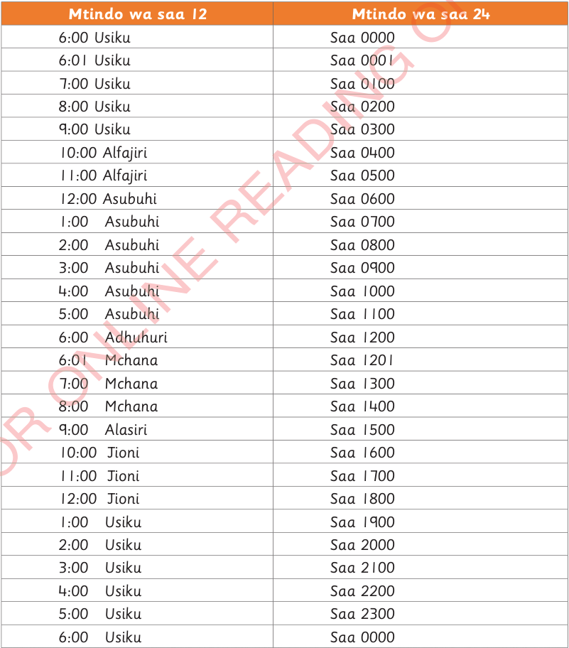

Inafahamika kuwa mchana mmoja una saa 12 na usiku mmoja una saa 12. Katika mtindo wa saa 24, siku huanza baada ya saa 6:00 usiku. Mtindo wa saa 24 huandikwa kwa tarakimu nne. Tarakimu mbili za mwanzo kushoto huonesha saa na zilizobaki huonesha dakika. Jedwali lifuatalo linaonesha uhusiano wa muda katika mtindo wa saa 12 na saa 24.
